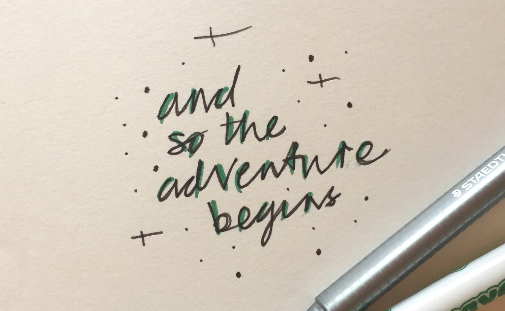

A New Decade of UX
User experience design as a profession is still, in the grand scheme of things, fresh off the boat. Compared to its counterparts in web design, industrial art, and myriad other creative spheres it is the baby of the bunch. When you look at its brief existence, however, the field of UX has travelled far, fast. Its specificities are many with plentiful micro-disciplines bound into the ‘User Experience Designer’ mantle.
We have books on specific subjects from UX strategy to prototyping and wireframing; we have innumerable interpretations of what constitutes ‘UX’ from a practical perspective; we’ve reached further and further afield with service design and not-strictly-about-UX-but-it’s-very-important concepts like Chip Heath and Dan Heath’s ‘The Power Of Moments’.
I have been wondering for a long time what the ‘next big thing’ might be or what user experience will mean in another decade; I know others pontificate on the same strand, too. The value of the discipline is being recognised for businesses everywhere - even if it is only lip-service that’s paid - since users (see: the people in touch with our products and services) are those who matter most in our design equations.
To think more about what could be we should look back at what was.

A Brief Story About Online Retail.
I recall an experience I had buying music online in the early days of digital retail.
I’d signed up for a play.com account (it predated Amazon IIRC) to purchase a CD by the band ‘311’ since you couldn’t readily get it on the UK high-street at the time. I went through the product pages, added the disc to my cart, entered my card details and checked out.
The CD never arrived.
I’d received no notification emails other than the one confirming the order; my account didn’t show any errors. Could the CD have been lost in the post? I needed to contact someone to follow up so phoned the customer support team. Phoned! This alone feels like a foreign interaction for a digital service in an age of chat-bots and online FAQs.
To cut a short story even shorter, the customer service rep found that I’d entered my card number incorrectly so the order couldn’t be processed. At no point had the store picked it up during my shopping experience; there was no validation flagging my error in the UI or notification email that the order couldn’t be completed.
Pretty bad, right?
In the case of this early online shopping experience, it was fine demonstration of a model which was just not there yet; aiming to replicate an offline interaction without completing the circle of micro-interactions and nuances. Things which we now understand are crucial (and definitely possible with our light-speed technical advances) to ensuring people are served well; well enough to come back themselves or to recommend us to a friend.
Digital Products.
As digital product makers, our expectations of what constitutes a good experience are so advanced from 10, 15, 20 years ago that I don’t honestly believe we’re even looking at something cut from the same cloth. It might now be an amalgam of concepts learned along the way but we’ve come so far down a road, what we had is akin to Betamax next to todays’ streaming services.
With age comes experience; we know more and knowledge is power!
For consumers ‘good UX’ is no longer a USP - it’s an unspoken requirement but one which is so subjective that it’s no wonder there are still horror-shows out in the wild. I mentioned lip-service paid to starting with a user-centric approach to design. I wasn’t saying this to be contrary or dismissive of any persons’ efforts. In the working world of UX design the best intentions often fall by the wayside to Agile planning, stakeholder expectation, and KPIs. Outside the challenges of designing great user experiences for our products, the concept of user experience design can go wanting when it comes to team and process inclusion.
How does ‘UX’ translate to user experience in the real world?
Culturally, we are engaged in a dialogue with the tools we use - they’re as much a part of our lives as we are of theirs, their makeup and structure - and, when they’re not performant we’re comfortable in saying as much. Not because we know what went wrong but because we expect them to ‘work’ and to serve our needs; it clearly demonstrates consumer expectations of ‘good UX’.
As Cliff Kuang cites in his book ‘User Friendly’, a quote from Stanford professor and renowned HCI author Clifford Nass:
“Humans expect computers to act as though they were people and get annoyed when technology fails to respond in socially appropriate ways”.
This requirement for a human-like response from our technology breeds dependency. Like in a case of ‘death by sat nav’ where a woman and her child became stranded in the desert after following the guidance systems’ clear, helpful instructions.
We trust our tools to hold our hands and guide us down the right path. The expectation is that these digital things will, like a guardian angel, save us from error; save us from our own silly mistakes; help us out because we are only human.
There is every argument that this is how it should always be but, just maybe, do we as users need to lean less on things that ‘should work’?
Whose responsibility is it to keep pushing the envelope, refining our experiences, replicating models and bringing our world online? I’d suggest it is everyone’s; the originator of the idea, the designer, the engineer, the user. That continual loop from idea to usership to feedback shouldn’t exclude any party from being able to influence the direction a tool takes.
This influence not only educates us as users into how our tools will save us when we really need them to, but also educates our tooling and its creators into how we as users make the mistakes in the first place!
I believe that by creating a clearer expectation of a products’ purpose - as we expect it to be used from both sides of the table - and providing explicit instruction we’ll reduce ambiguity and improve ability across the board. This goes for the people coding and shipping our digital products as well as those using them.
A Big Leap.
Short of a world-ending event which takes us back to the Dark Ages, our future is assuredly digital. Author and speaker Cennyd Bowles talks about ‘building better worlds’ and how we should not be designing ‘what’ but ‘for when’. We should be exploring how we design the world in which we are going to live, not just the things which go in it.
We are going to need to come to terms with our ecological, economical, and technological shifts before we can really make our big leap. But when we do, we’ll be able to think very differently about user experience; both on a global scale and in our everyday lives.
I believe that UX design is going to double-down on personalisation; personalisation to the deepest levels of human-device or human-service connection and a point we’ve not yet fully rationalised or realised.
This (r)evolution has already begun with huge establishments integrating aspects of technology-supported personalisation into their services. Like Princess cruises and the ‘Ocean Medallion’ or Disney’s themepark-unlocking ‘magic band’. The scope and scale of these additional layers of experience consideration beggars belief; both hinge on the technology becoming invisible and the ‘moments-between-moments’ so that the curtain is never lifted.
The Human Variable.
As we know designing user experiences is no longer unique or special although it is and always will be a very skilled craft. Having a user experience born from human-centric considerations is what people expect from todays’ software and services. Because people are people however, they will inherently use devices, services, and software in ways we neither expect or intend. We must wonder: is designing ‘the experience’ even possible?
Amidst this ‘hacking’ people go on to trust products past their point of capability - they’re no longer ‘fit for purpose’ because the original purpose has become abstract.
Our users are forcing our hand when it comes to product design. Because people place so much trust in their tools, enhancement must come at an entirely new level. Being functional and feature-rich may no longer be enough.
We can enhance our products with tailored, anticipatory behaviour. Personalisation which understands how you’re going to use a product based on how you’ve used it before. Something that reacts in a way which is personal to you. At this point, the product becomes ubiquitous in support of your existing skills; it is invisible and everywhere within your bubble.
Too Much Trust?
It may be a very bold statement to make but I believe people trust their tech too much. We have become infinitely less self-aware and self-reliant in the last 15 years thanks to some fundamentally life-altering shifts in our technological landscape. The ability to trust to this degree is certainly a first-world privilege.
When we hold this trust in such high regard, how far can we blame a system for our own misuse or expectations not being met? Should we be more forgiving in our trust of systems, platforms, programmes? If we are continually using products outside of their intended scope, can we blame the product if our mental models and modes don’t match up to those prescribed in the system?
The phrase ‘because users’ is thrown around quite freely in UX circles because no matter what, someone will always find a different way to use , misuse, or hack a product for a purpose not intended by its original scope. We often call these ‘edge cases’ but, really, they’re just use cases. Is this unexpected behaviour and ‘using whatever tool’ becoming the norm?
The levels of deeper personalisation - the hand holding - suddenly becomes a necessity; a requirement to help keep our users - real people in a real world - safe and prevent error through ‘mis-use’ or lack of understanding how something ‘should’ work.
A Deeper Bond.
If deeply ingrained, personal experiences with our technology are to become the direction for the next decade, how do we begin? What considerations must be made to help people form a deeper bond with their technology and become more tolerant of its intended purpose in their world?
We already know that people don’t use things as they’re intended, they trust technology too much and, when things go wrong, the curtain is lifted and the ‘magic’ is no longer invisible.
I’m thinking about how we design products presently. We want frictionless UX. We want the best checkout; the best booking experience; the fastest route to the end goal all the while anticipating our users to have a mastery of the concepts, methods, and models we are using.
That sounds a little crazy to me.
What if we were no longer to assume that mastery or prior knowledge of a concept is necessary? What if we were to ask for more attention from our users rather than give them what they expect on a plate? Do we need more focus from both our designs and our users? Focus more; learn more; do less in the long-run.
I believe that deeper levels of personalisation and therefore technology integration will benefit this. We’re now thinking differently. It’s not just finding a use for an Apple Watch because the tech’s good (Author: guilty!); it’s understanding that the tech can help you out, if you give it the attention it needs when it needs it.
As with all things there will be a flip-side and negative effects which must be considered should we look to create things which ‘do no harm’. Rewriting the rules and demanding more, focussed attention runs the risk of addiction; never disconnecting; becoming detached from what’s real. The invisible tech should not - I stress - be a replacement, but merely a support to improve our position.
Where will we be in another decade? I don’t know. I hope, if nothing else, that we can begin to create new trust, new tolerance, and stronger intention in the design of our digital products AND our use of them, too.